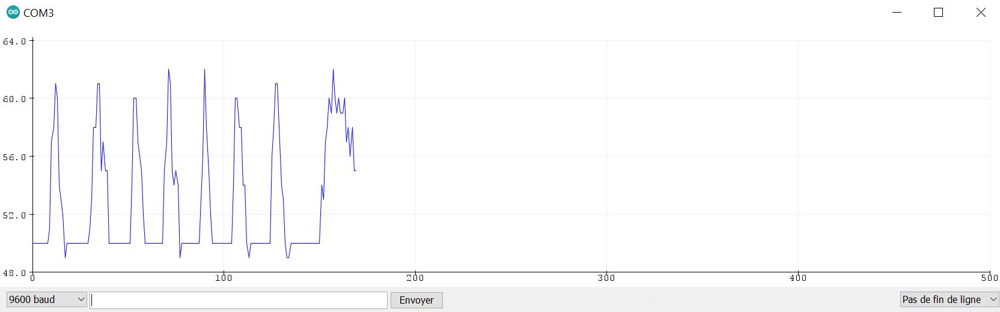

Découvrir et comprendre : la radioactivité
Vous devez tous au moins vaguement connaître la notion de radioactivité. Le phénomène étant globalement la propriété qu'ont certains noyaux atomiques de se transformer spontanément en émettant divers rayonnements. Les médias en parlent souvent, surtout depuis les catastrophes subies par les centrales nucléaires de Tchernobyl et Fukushima. La Radioactivité existe depuis toujours mais elle a été découverte assez récemment, nous savons qu’elle peut constituer un danger comme une bonne source d’énergie mais nous n’en connaissons pas encore tous les effets et propriétés.
Mais ne vous êtes-vous jamais demandé si elle pouvait constituer un danger pour vous, dans votre environnement, et qu’est-ce qui serait plus radioactif dans celui-ci ?
C’est la question à laquelle nous avons cherché à répondre. En effet, nous avons cherché à mesurer le niveau de radioactivité autour de différents objets auxquels on peut être confrontés au quotidien. Cependant, tout d’abord, il a fallu se procurer un capteur capable de détecter les particules émises lors du rayonnement et écrire un programme capable de lire les données que nous allions recevoir du capteur.
Tout d’abord, nous nous sommes renseigné sur les seuils à ne pas dépasser selon les lois imposées par les autorités sanitaires (1 mSv/an) et selon certains sites officiels d’institutions qui étudient la radioactivité. Nous nous sommes également renseigné sur les possibles matériaux qui seraient capables d’émettre plus de particules radioactives par seconde que d’autres. Cette dernière recherche nous indique tout d’abord que les sources principales de rayonnement ionisants naturelles sont les rayonnements cosmiques (auxquels nous ne sommes que très peu confronté), les rayonnements terrestres (qui proviennent du sol et qui peuvent se retrouver dans certains matériaux, notamment le granite), la radioactivité de l’air (ou plus particulièrement le radon que nous retrouvons à peu près partout) et pour finir les rayonnements émis par le corps humain. Les rayonnements émis par le corps humain ne pouvant pas constituer de danger, ainsi que le radon et les rayonnements cosmiques ne pouvant pas être isolés car trop diffus et quasi omniprésents sur la planète ou du moins au lycée, nous nous sommes alors concentré sur les rayonnements terrestres pouvant prendre leur origine de matériaux. Comme dit précédemment, le granite nous intéresse. En effet, c’est une roche présente au lycée et qui contient des radionucléides, comme toutes les roches. Certaines, comme le granite, sont plus radioactives que d'autres. Ainsi, dans les régions granitiques comme la Bretagne, l'exposition peut être jusqu'à 4 fois plus élevée que dans d'autres endroits de France.
Une fois l’étude choisie, il a fallu concevoir le capteur. Cette tâche impliquait le montage du capteur et des branchements de la carte arduino puis l’élaboration d’un programme visant à exploiter les données envoyées par le capteur. On peut retrouver une photo ci contre de l’élaboration de notre montage.
Afin d'élaborer le programme, nous avons récupéré sur le site du constructeur des informations sur les librairies et méthodes à utiliser. On a donc créé un programme à partir de ces références en C++ à l’aide du logiciel Arduino IDE. On peut retrouver une photo de la conception du code également ci contre ainsi que le code en appuyant sur ce bouton.
#include <Wire.h>
#include <SPI.h>
#define LOG_PERIOD 1000
#define MAX_PERIOD 60000
unsigned long count; // Incrémenter à chaque impulsion du tube
unsigned long cpm;
unsigned int multiplier;
unsigned long previousMillis;
float usv;
void tube_impulse(){
count++;
//Serial.println("Impulsion");
}
void setup() {
// put your setup code here, to run once:
Serial.begin(9600);
Serial.println("Starting");
count = 0;
cpm = 0;
multiplier = MAX_PERIOD / LOG_PERIOD;
attachInterrupt(0, tube_impulse, FALLING);
delay(250);
}
void loop() {
// put your main code here, to run repeatedly:
unsigned long currentMillis = millis();
if(currentMillis - previousMillis > LOG_PERIOD){
// Traiter la valeur seulement tous les intervales de temps donné
previousMillis = currentMillis;
cpm = count * multiplier; // Nombre d'impulsion ramené à l'interval de temps
usv = float(cpm);
Serial.println(count);
//Serial.println(usv);
count = 0;
}
}
Une fois le programme élaboré et le capteur prêt, nous avons pu passer aux mesures. Nos premières mesures ont indiqué un niveau de radioactivité stable à 50 à l’air libre et simplement posé sur la paillasse. Lors de l’approche d’un morceau d’ardoise, nous avons observé peu de changements notables, le 50 constant a été maintenu. Tandis qu’avec l’approche d’un morceau de granite, le graphique a formé des pics montant jusqu’à 62. Vous pouvez retrouver le graphique ci-contre.
